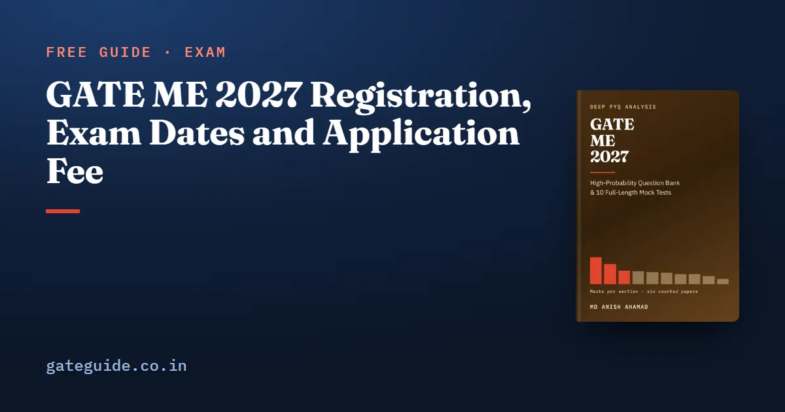

GATE ME 2027 Registration, Exam Dates and Application Fee

GATE ME 2027 registration runs on GOAPS, the GATE Online Application Processing System, through the official IIT Madras portal. As checked on the official site in September 2026, registration opened on 2 September 2026, the regular window closed on 27 September, and the extended window with a late fee runs to 5 October 2026. The exam window is 6 to 21 February 2027. This guide walks an ME applicant through the steps, the fee and the dates.
In this guide
Key takeaways
- Registration is on GOAPS at gate2027.iitm.ac.in; it opened on 2 September 2026.
- Regular closing date: 27 September 2026. Extended closing date with late fee: 5 October 2026.
- One paper costs 1,000 or 1,500 rupees for female, SC, ST and PwD candidates, and 2,000 or 2,500 for everyone else.
- The exam runs on 6-7, 13-14 and 20-21 February 2027; results come on 19 March 2027.
- DigiLocker registration is mandatory for Indian nationals.
- The ME paper's own date and session must be checked in the current notification.
The words on the application form
GOAPS is the online system where you register, fill the form, upload documents and pay. DigiLocker is the government document wallet from which GOAPS fetches your personal details. The regular period is the window with the standard fee; the extended period is the later window with a higher fee.
A paper in GATE is one subject test. Mechanical Engineering is the paper with code ME. GATE 2027 has 30 test papers, with Robotics and Automation (RA) new this year.
The dates, in one table
| Event | Date |
|---|---|
| Registration opened on GOAPS | 2 September 2026 |
| Regular closing date | 27 September 2026 |
| Extended closing date, with late fee | 5 October 2026 |
| Exam city allotment information | 4 January 2027 |
| Exam days | 6-7, 13-14 and 20-21 February 2027 |
| Results | 19 March 2027 |
These are the official facts as checked in September 2026. The exact day and session for the ME paper is fixed in the organisers' schedule. Check the current notification for it, and see the GATE 2027 dates guide for the full calendar.
Remember: If you are reading this after 5 October 2026, the window as published has closed. Check the official site for any change before assuming either way.
Registration, step by step
- Open the official portal, gate2027.iitm.ac.in, and go to GOAPS.
- Register, verifying your identity through DigiLocker if you are an Indian national.
- Let GOAPS fetch your personal details from DigiLocker, and check them.
- Allow the live photo capture during registration.
- Choose ME as your paper, and a second paper only if the notification allows that combination for ME.
- Place category or disability certificates in the DigiLocker folder named GATE2027.
- Pay the fee for your category and period, and save the confirmation.
The general walk-through, with eligibility and documents for every paper, is in the GATE 2027 registration guide.
Trap: The ID you verify through DigiLocker is the ID you must carry to the exam centre. Registering with one ID and arriving with another can cost you entry.
The application fee by category
| Candidate | One paper, regular | One paper, extended | Two papers, regular | Two papers, extended |
|---|---|---|---|---|
| Female, SC, ST, PwD | ₹1,000 | ₹1,500 | ₹2,000 | ₹2,500 |
| All others, including foreign nationals | ₹2,000 | ₹2,500 | ₹4,000 | ₹4,500 |
Worked example: what the late window costs
Take two candidates applying for ME alone in the extended period. A female candidate pays ₹1,500 instead of ₹1,000, so the late window costs her rupees. A general male candidate pays ₹2,500 instead of ₹2,000, again 500 more.
Now take a female candidate applying for two papers. In the regular period she paid ₹2,000; in the extended period it is ₹2,500. The late fee is 500 rupees whether you take one paper or two. Fees can be revised, so confirm them on the official site.
Documents and the DigiLocker folder
DigiLocker registration is mandatory for Indian nationals, and personal details are fetched from it. Certificates go into a DigiLocker folder named GATE2027:
| Certificate | File name in the folder |
|---|---|
| SC or ST | CATEGORY.pdf |
| PwD | UDID_CERT.pdf or PWD_CERT.pdf |
In one line: Get your DigiLocker folder right before you start the form, and carry the same verified ID to the centre.
Checking your form before you pay
Most registration problems are small mismatches found too late. Before you pay, go through the form once more with these checks:
- Your name and date of birth match what DigiLocker fetched.
- The paper chosen is ME, and any second paper is one the notification allows.
- Your category matches the certificate in the GATE2027 folder.
- The fee shown matches your category and the period you are applying in.
- You have saved a copy of the submitted form and the payment confirmation.
A mismatch between your form and your ID is the kind of error that surfaces at the exam centre, where it is hardest to fix.
After you register
Exam city information is due on 4 January 2027. The admit card and the rules for exam day are covered in the admit card and exam day guide. For queries, the helpdesk is helpdesk@gate.iitm.ac.in and 044-22578200.
IIT Madras organises GATE 2027; the guide to IIT Madras as organiser explains what that does and does not mean. This site is independent of IIT Madras and of GATE.
Using the months between registration and the exam
From early October to the first exam day is about seventeen weeks. That is enough for a full pass of the ME syllabus if you plan by marks. Materials, Manufacturing and Metrology was the largest technical subject in all six counted papers, and General Aptitude and Engineering Mathematics together carried exactly 28 marks in every one. Start with those.
The book counts all six ME papers from 2022 to 2026 question by question and turns the counts into a staged plan, in the GATE ME 2027 book.
Quick revision
- Register on GOAPS at gate2027.iitm.ac.in.
- Regular close 27 September 2026; extended close with late fee 5 October 2026.
- One paper: ₹1,000/₹1,500 (female, SC, ST, PwD) or ₹2,000/₹2,500 (others).
- The late fee is 500 rupees more in each case.
- DigiLocker is mandatory for Indian nationals; certificates go in the GATE2027 folder.
- Exam days: 6-7, 13-14, 20-21 February 2027; results 19 March 2027.
- Check the ME paper's own date and session in the current notification.
Frequently asked questions
What is the last date for GATE ME 2027 registration?
As checked on the official site in September 2026, the regular closing date was 27 September 2026 and the extended closing date, with a late fee, was 5 October 2026. Registration is on GOAPS through gate2027.iitm.ac.in. Dates can change, so confirm the current deadline on the official site before you rely on it.
What is the GATE 2027 application fee for the ME paper?
For one paper, female, SC, ST and PwD candidates pay 1,000 rupees in the regular period or 1,500 in the extended period. All other candidates, including foreign nationals, pay 2,000 or 2,500. Two papers cost 2,000 or 2,500 for the first group and 4,000 or 4,500 for everyone else. Check the current notification.
When is the GATE ME 2027 exam?
GATE 2027 runs on 6 and 7, 13 and 14, and 20 and 21 February 2027. The date and session of the ME paper itself is set by the organisers in their schedule, so check the current notification on gate2027.iitm.ac.in. Exam city information is due on 4 January 2027 and results on 19 March 2027.
Is DigiLocker mandatory for GATE 2027 registration?
Yes, for Indian nationals. Personal details are fetched from DigiLocker, and a live photo is captured during registration. SC and ST certificates go into the DigiLocker folder named GATE2027 as CATEGORY.pdf, and PwD certificates as UDID_CERT.pdf or PWD_CERT.pdf. The same ID you verified through DigiLocker must be produced at the exam centre.
Sources
Dates, fees and the syllabus are set by the GATE 2027 organising institute and can change. Always confirm at gate2027.iitm.ac.in.